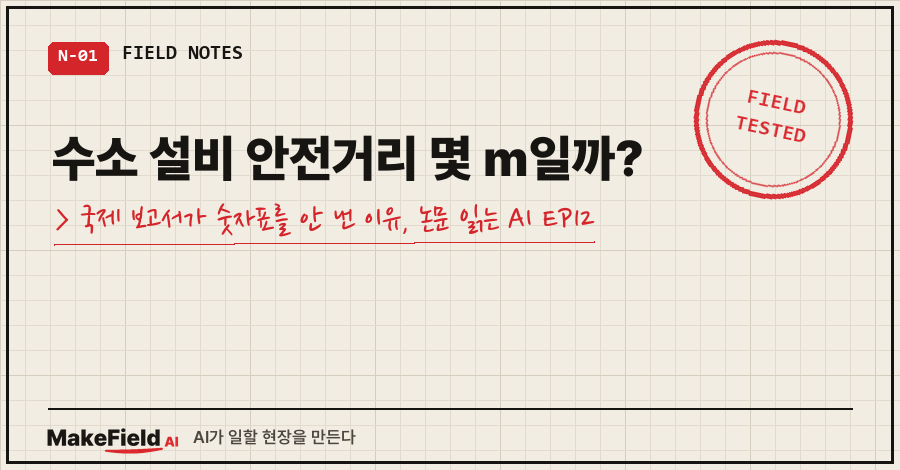
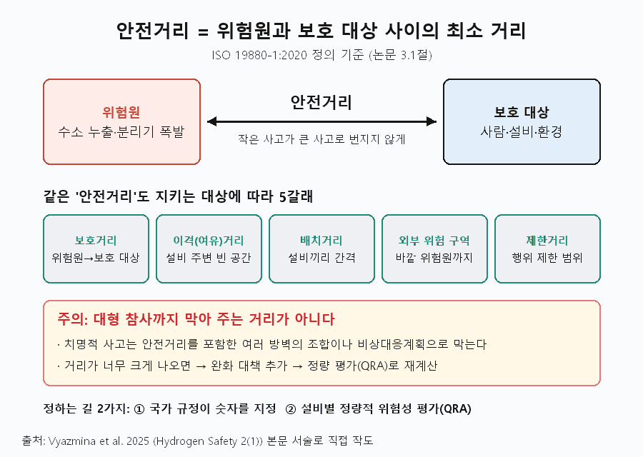
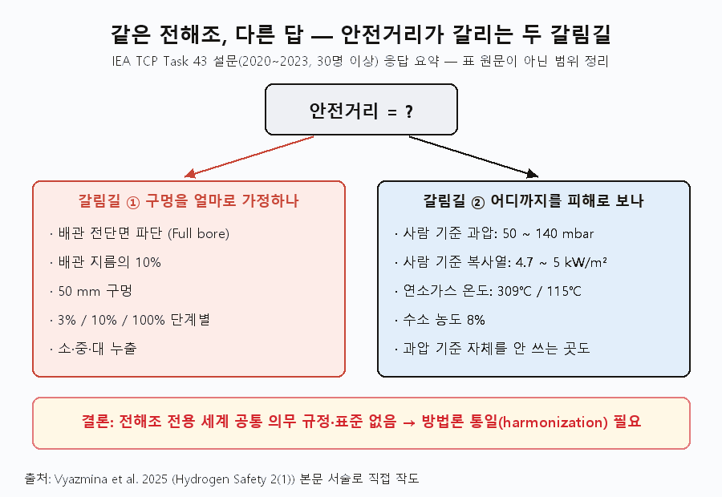
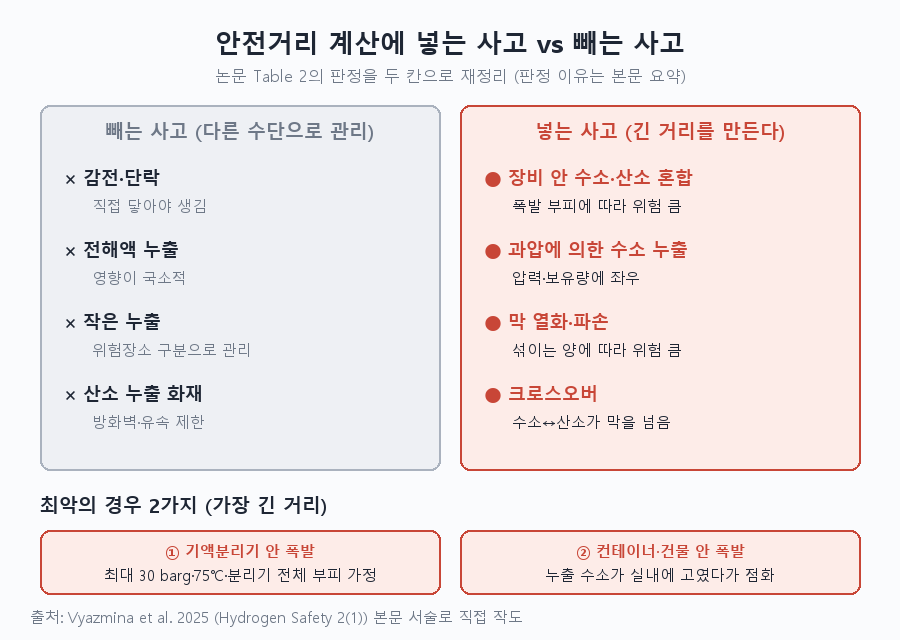
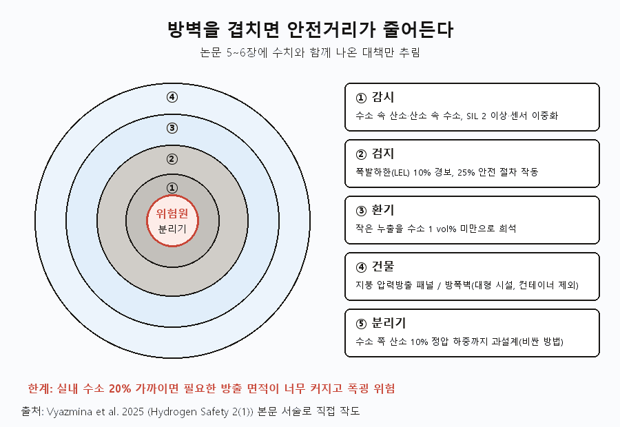
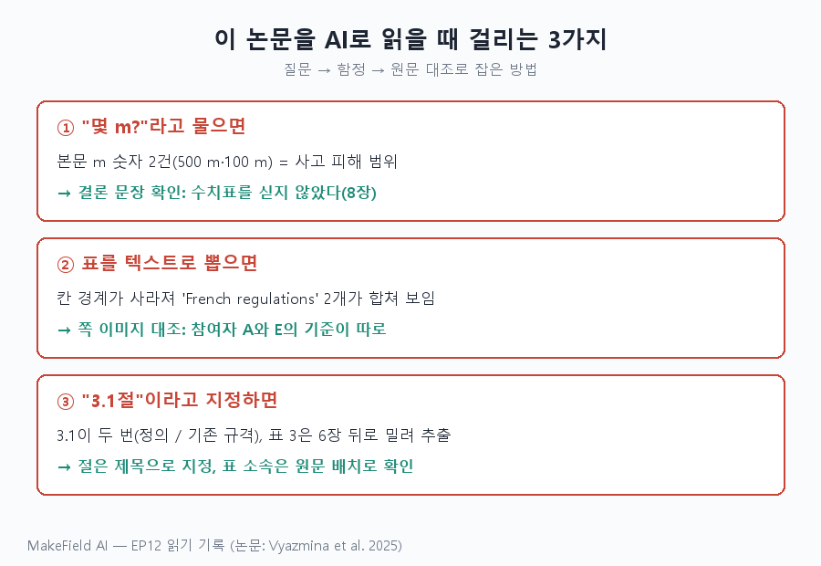

"수소 설비 안전거리는 몇 m인가요?" 이 질문에 국제 전문가 그룹이 내놓은 답은 "아직 세계 공통의 숫자는 없다"입니다.
IEA 수소 기술협력프로그램(TCP) Task 43의 2025년 권고 보고서는 전해조 주변 안전거리 수치표를 일부러 싣지 않았어요. 피해 기준과 누출 크기 기준이 아직 나라마다 달라서입니다 [Vyazmina 2025, 8장].
'논문 읽는 AI' 12편, 3부 '안전'의 첫 글이에요. 지난 편 크로스오버가 막 안에서 섞이는 이야기였다면, 이번엔 사고가 났을 때 얼마나 떨어져 있어야 하는지를 다룹니다.
읽은 문헌은 에어리퀴드·쉘·INERIS·메릴랜드대 등 19명이 Hydrogen Safety 2권 1호(2025, 47~67쪽)에 낸 입장 논문(Position Paper)입니다(doi: 10.58895/hysafe.18).
1. 수소 설비 안전거리란 무엇인가요
안전거리란 위험원과 사람·설비·환경 사이에 두는 최소 거리로, 예측 가능한 사고의 영향을 줄이고 작은 사고가 큰 사고로 번지지 않게 하는 거리입니다. 이 정의는 ISO 19880-1:2020을 따른 것이에요 [Vyazmina 2025, 3.1절].
여기서 오해하기 쉬운 점이 하나 있어요. 안전거리는 대형 참사까지 막아 주는 거리가 아닙니다. 그런 사고는 안전거리를 포함한 여러 방벽의 조합이나 비상대응계획으로 막는다고 논문은 못박아요 [Vyazmina 2025, 3.1절].
ISO 19880-1은 '안전거리'라는 한 단어를 지키려는 대상에 따라 다섯 갈래로 나눕니다 [Vyazmina 2025, 3.1절].

| 구분 | 원문 용어 | 뜻(풀이) |
|---|---|---|
| 보호거리 | protection distance | 위험원에서 보호 대상까지 |
| 이격(여유)거리 | clearance distance | 설비 주변에 비워 둘 공간 |
| 배치거리 | installation layout distance | 설비끼리의 배치 간격 |
| 외부 위험 구역 | external risk zone | 바깥 위험원까지의 거리 |
| 제한거리 | restriction distance | 그 안에서 행위가 제한되는 거리 |
거리를 정하는 길은 둘이에요. 국가 규정이 숫자를 정해 주거나, 정량적 위험성 평가(QRA)로 그 설비만의 거리를 계산합니다. 계산된 거리가 너무 크면 완화 대책을 더하고 다시 계산하라고 해요 [Vyazmina 2025, 3.1절]. 산업가스협회 EIGA 문서 75/21의 4단계가 그 순서입니다 [Vyazmina 2025, 3.1절 — EIGA 2021 인용].
- 위험원과 사건을 찾는다(발생 가능성 포함)
- 주변 대상에 미치는 영향을 계산한다(완화 요소 포함)
- 대상별로 최소 피해 기준을 만족하는 거리를 정한다
- 예방·완화 대책을 더하고 거리를 다시 계산한다
2. 이 논문은 무엇을 풀려 했나요 — 나라마다 다른 안전거리
같은 전해조를 놓고도 "어느 크기의 구멍을 가정할지"와 "어디까지를 피해로 볼지"가 참여자마다 달랐기 때문입니다.
그래서 이 논문의 목표는 제조사·운영사·규제기관이 함께 쓸 수 있는 전해조 안전거리의 최소 요건과 권고를 담은 참고 문서를 만드는 것이었어요 [Vyazmina 2025, 1장]. 대상은 가장 널리 쓰이는 알칼라인과 PEM 두 방식입니다 [Vyazmina 2025, 2.1절].
Task 43은 2020~2023년 30명이 넘는 참여자에게 설문을 돌렸어요. 결론은 "응답이 매우 다양하다"였고, 전해조에 대한 세계 공통의 의무 규정이나 표준이 없다는 지적이 여러 번 나왔습니다 [Vyazmina 2025, 3.2절]. 주요 규격 가운데 안전거리를 직접 다루는 건 NFPA 2(2023)뿐인데, 그마저 전해조에 맞춰져 있지 않고 기술 방식도 구분하지 않는다고 해요 [Vyazmina 2025, 3.1절].

설문 발췌(참여자 A~E)에서 갈린 지점만 추리면 이렇습니다 [Vyazmina 2025, Table 1].
| 갈린 항목 | 응답 범위 |
|---|---|
| 가정한 누출 구멍 | 배관 전단면 파단 / 지름 10% / 50 mm / 3·10·100% 단계 / 소·중·대 |
| 사람 기준 과압 | 50 mbar ~ 140 mbar |
| 사람 기준 복사열 | 4.7 ~ 5 kW/m² |
| 아예 다른 축 | 연소가스 온도(개인 309℃, 밀집 구역 115℃), 수소 농도 8% |
복사열(불꽃에서 오는 열)을 주로 보는 곳이 있고, 뜨거운 연소가스 온도를 보는 곳이 있었어요. 폭발 과압 기준을 쓰지 않는 참여자도 있었습니다 [Vyazmina 2025, 3.2절]. 피해 기준 자체는 이 논문의 범위 밖이라고 저자들이 선을 그었어요 [Vyazmina 2025, 3.2절].
3. 어떻게 접근했나요 — 거리를 정할 기준 사고 고르기
논문은 숫자를 새로 계산하지 않았어요. 대신 위험요인 목록, 과거 사고 교훈, 기존 규격을 모아 "어떤 사고를 기준으로 거리를 잴지"를 추렸습니다 [Vyazmina 2025, Abstract].
사람에게 큰 피해를 주는 '장비 안 수소·산소 혼합 폭발'과 '수소 누출'이 기준이고, 감전·전해액 누출·작은 누출은 거리 산정에서 뺍니다 [Vyazmina 2025, Table 2].

| 사고 | 거리 산정에 포함? | 논문이 든 이유 |
|---|---|---|
| 감전·단락 | 아니오 | 장비에 직접 닿아야 생김 |
| 전해액 누출 | 아니오 | 영향이 국소적 |
| 정상 운전 중 작은 누출 | 아니오 | 위험장소 구분(방폭 구역)으로 관리 |
| 산소 누출 화재 | 아니오 | 방화벽·유속 제한으로 관리 |
| 장비 안 수소·산소 혼합 | 예 | 폭발 부피·방벽에 따라 위험이 클 수 있음 |
| 과압에 의한 수소 누출 | 예 | 결과가 압력·보유량에 좌우됨 |
| 막 열화·파손, 크로스오버 | 예 | 섞이는 양에 따라 위험이 클 수 있음 |
기준 구멍 크기도 정해 둡니다. 압력방출밸브·센서가 있어 배관이 통째로 끊기는 사고는 확률이 매우 낮으니, 보통 가장 큰 배관 지름의 10% 구멍을 '믿을 만한 예측 사고'로 잡는다고 해요 [Vyazmina 2025, 5.2절]. 참고로 NFPA 2는 배관 단면적의 1%에 해당하는 구멍을 씁니다. 다만 설계에 따라 그 누출량이 전해조 최대 생산량보다 커질 수 있어 이를 따져야 한다고 덧붙여요 [Vyazmina 2025, 5.2절].
가장 긴 거리가 나오는 최악의 경우는 두 가지로 압축됩니다 [Vyazmina 2025, 6장].
- 기액분리기 안 폭발: 수소·산소가 분리기 안에서 섞여 터지는 경우. 계산할 때는 설계압력 최대 30 barg, 온도 75℃, 분리기 전체 부피를 가정할 수 있다고 제시해요 [Vyazmina 2025, Table 3].
- 컨테이너·건물 안 폭발: 새어 나온 수소가 실내에 고였다가 터지는 경우. 누출 구멍이 몇 mm만 넘어도 폭발 하한 아래로 희석할 환기량이 감당 못 할 수준이 된다고 해요 [Vyazmina 2025, 5.2절].
왜 스택이 아니라 분리기일까요. 스택은 자유 공간이 작아 폭발 위험이 상대적으로 작고, 빈 공간이 큰 분리기·정제기·저장용기가 가스가 모이고 섞이기 쉬운 곳이라서입니다 [Vyazmina 2025, 4장].
4. 무엇을 알아냈나요 — 방벽을 겹치면 거리가 줄어든다
방벽을 겹겹이 세우면 일부 사고 시나리오는 아예 빠지고 거리도 크게 줄일 수 있다는 게 결론이에요 [Vyazmina 2025, 8장].

논문이 제시한 대책 중 수치가 붙은 것만 모으면 이렇습니다.
| 대책 | 구체 기준 | 근거 |
|---|---|---|
| 가스 검지 | 폭발하한(LEL) 10%에서 경보, 25%에서 안전 절차 작동 | [Vyazmina 2025, 6장] |
| 수소 속 산소·산소 속 수소 감시 | 안전무결성등급 SIL 2 이상, 센서·채취점 이중화 | [Vyazmina 2025, 6장] |
| 환기 | 작은 누출을 수소 1 vol% 미만으로 희석하도록 설계 | [Vyazmina 2025, 5.2절] |
| 분리기 과설계 | 수소 쪽 산소 10%의 정압 하중을 견디게(비싼 방법) | [Vyazmina 2025, 6장] |
| 실내 산소 농도 | 23.5% 넘는 곳에서 압축기·내연기관 차량 금지 | [Vyazmina 2025, 5.3절] |
건물 쪽 대책으로는 지붕 압력방출 패널과 방폭벽이 있어요. 단 방폭벽은 대형 산업 시설용이고 컨테이너형에는 해당하지 않는다고 적었습니다 [Vyazmina 2025, 6장]. 또 실내 수소 농도가 20% 가까이 되면 필요한 방출 면적이 너무 커지고, 장애물이 많은 곳에선 폭굉 위험까지 생긴다고 해요 [Vyazmina 2025, 5.2절].
실제 사고도 앞의 '최악의 경우'와 닮았어요. 자세한 사고 분석은 다음 편에서 다루고, 여기선 거리와 관련된 숫자만 옮깁니다 [Vyazmina 2025, 7장].
- 1975년 영국 라포르테: 산소 분리 드럼에 수소가 13% 넘게 섞여 폭발. 교훈으로 산소 순도 98.8%·수소 순도 99.7%에서 경보, 98%·99.5%에서 정지를 권했어요 [Vyazmina 2025, 7장 — HSE 1976 인용].
- 1992년 홍콩 캐슬피크 발전소: 고압 수소 실린더 2개 폭발, 큰 파편이 500 m까지 날아갔습니다 [Vyazmina 2025, 7장].
- 2019년 5월 강릉: 저출력 운전 중 산소가 수소 쪽으로 대량 크로스오버. 약 100 m 반경 건물이 파괴되고 2명이 숨졌어요. TNT 환산 약 50 kg으로 추정됩니다 [Vyazmina 2025, 7장 — Kim 2019 인용].
그래서 논문은 압력용기를 연쇄 폭발(도미노)로부터 지키려면 용기 파열까지 시나리오로 넣은 이격거리나 보호벽이 필요하다고 정리해요 [Vyazmina 2025, 7장].
5. 이 논문의 한계는 무엇인가요
실험·계산 결과가 아니라, 전문가 합의로 '어떤 사고를 기준으로 삼을지'를 정리한 권고 문서입니다.
- 거리 숫자 없음: 피해 기준이 통일되지 않았고, 숫자가 쓸모 있으려면 세계적으로 통일된 방법론이 먼저라는 이유예요 [Vyazmina 2025, 8장].
- 피해 기준은 범위 밖: 매우 큰 주제라 이번 논문에서 다루지 않았다고 밝혔어요 [Vyazmina 2025, 3.2절].
- 구멍 크기는 연구 중: 기준 구멍 크기는 "과학 연구가 진행 중"이라고 표에 직접 적혀 있습니다 [Vyazmina 2025, Table 3].
- 배기구는 제외: 수소·산소 배기구 화재, 두 배기구의 근접 배치는 범위 밖이에요 [Vyazmina 2025, 5.1절].
6. 이 논문을 AI에게 읽힐 때 걸린 세 군데
이번엔 "그래서 몇 m냐"는 질문 자체가 함정이었어요. 거리 숫자를 기대하고 물으면 AI는 문서 안의 아무 m 숫자나 답으로 끌어오기 쉽습니다.

① 'm'가 붙은 숫자가 권고 거리처럼 보인다. PDF 본문 전체에서 미터 단위 숫자를 검색시켰더니 딱 2건이었어요.
Larger fragments traveled up to 500 m.
... destroyed buildings in a radius of about 100 m.둘 다 사고 피해 범위지 권고 거리가 아닙니다. 답은 결론 끝 문장 "This paper does not include tables presenting specific safety distances"에 있었어요 [Vyazmina 2025, 8장].
② 표가 텍스트로 풀리면 칸 경계가 사라진다. 설문 표의 '피해 기준' 행을 텍스트로 뽑으니 다섯 참여자의 값이 한 줄로 이어졌고, 'French regulations'가 두 번 나와 하나로 합쳐 읽기 쉬웠어요. 해당 쪽을 이미지로 렌더링해 대조하니 첫째는 참여자 A(프랑스)의 기준, 둘째는 "따르는 표준 없음"이라고 답한 참여자 E(Global)가 적은 복사열 3·5·8 kW/m² 기준이었습니다. A는 '또는'으로 회사 자체 기준(사람 4.7 kW/m²·50 mbar)까지 따로 적어 두었고요 [Vyazmina 2025, Table 1].
③ 절 번호가 두 번 나온다. 이 논문엔 '3.1 DEFINITION'과 '3.1 EXISTING REGULATIONS…'가 둘 다 있어요. "3.1절 요약해 줘"라고 하면 엉뚱한 쪽을 요약할 수 있어서, 절은 번호가 아니라 제목으로 지정했습니다. 표 3도 텍스트 추출본에선 6장 제목 뒤에 끼어 나와서 5.5절 소속을 원문 배치로 확인했어요.
여러분 분야의 기준 문서에도 "숫자를 기대하고 묻는" 질문이 있지 않나요? 이번에 쓴 점검 질문을 그대로 옮겨 둡니다.
1) 내가 찾는 숫자(예: 거리 m)가 문서에 '권고값'으로 있는지부터 확인해. 있으면 쪽·절, 없으면 "없음"과 그 이유 문장을 원문으로.
2) 같은 단위의 숫자를 전부 뽑아 [권고값 / 사고 결과 / 인용 수치]로 분류해.
3) 표는 텍스트 추출본만 믿지 말고, 행·열 머리글과 값을 짝지어 다시 세워. 애매하면 해당 쪽 이미지와 대조해.
4) 절 번호가 중복되거나 표 위치가 본문과 어긋나면 표시해.
5) 저자가 '범위 밖'이라고 한 주제는 요약에 넣지 말고 따로 적어.7. 자주 묻는 질문
Q. 그럼 수소 설비 안전거리는 어디서 숫자를 찾나요?
논문은 기준 구멍 크기와 피해 기준을 지역 규정·모범 사례에 따르라고 해요. 참고 문서로 NFPA 2(2023), PGS35, INERIS(2023)를 들고, 그 설비만의 거리는 정량적 위험성 평가(QRA)로 계산할 수 있다고 설명합니다 [Vyazmina 2025, 3.1절·Table 3].
Q. 안전거리만 지키면 큰 사고도 막을 수 있나요?
아니요. 안전거리는 예측 가능한 사고의 확산을 막는 거리이고, 대형 사고는 여러 방벽과 비상대응계획으로 다뤄야 한다고 논문이 분명히 적었어요 [Vyazmina 2025, 3.1절].
Q. 전해조에서 가장 위험한 곳은 스택인가요?
폭발 측면에선 스택보다 빈 공간이 큰 기액분리기·정제기·저장용기가 더 위험하다고 봐요. 다만 스택은 넓은 막 면적 때문에 작은 누출이나 크로스오버의 출발점이 될 수 있습니다 [Vyazmina 2025, 4장].
정리하면, 이 논문이 준 건 숫자가 아니라 숫자를 만드는 순서예요. 어떤 사고를 기준으로 삼고(분리기 폭발·실내 폭발), 구멍을 얼마로 가정하고(배관 지름 10%), 어떤 방벽으로 줄일지까지가 수소 설비 안전거리의 뼈대입니다.
다음 편에서는 라포르테·강릉 같은 실제 사고를 따로 놓고, 사고 리뷰에서 공통으로 나오는 원인을 짚어 볼게요.
여러분이 다루는 기준 문서에도 "숫자가 있을 줄 알았는데 방법론만 있던" 경우가 있었나요?
논문을 AI에게 맡길 때 쓰는 점검 질문 모음은 makefield.ai에 모으고 있어요.